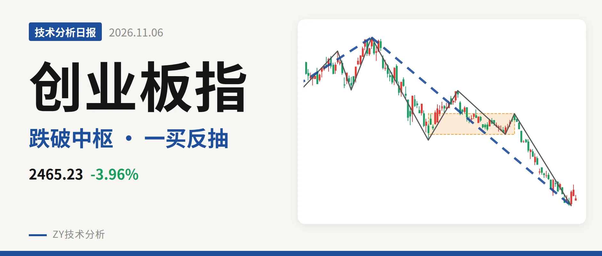
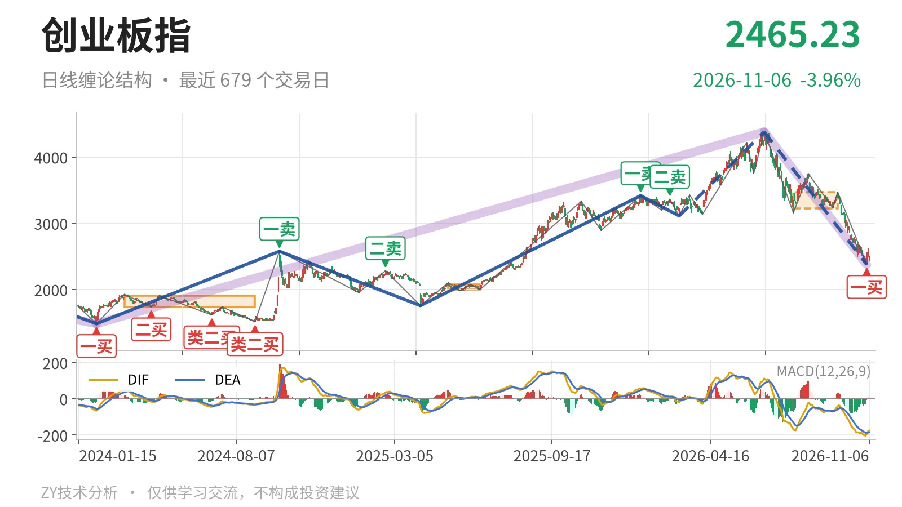
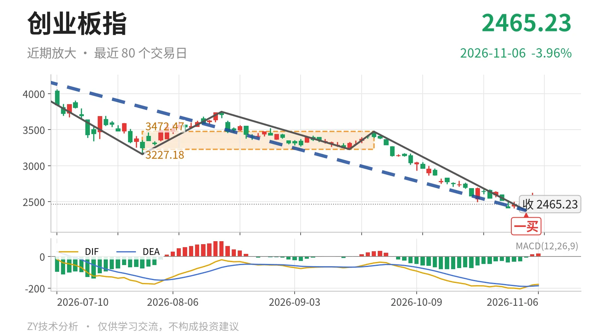

创业板指｜跌破中枢后反抽 2465点能否站稳

最近日线中枢 3227.18—3472.47点，收盘位于中枢之下
一句话：日线仍处下跌段，一买后反抽未成笔，重点看3227点。
📉 走势结构：大级别上涨未结束，日线下跌段延续
当前仍处2024年2月5日至2026年6月25日上涨段的内部调整中，但6月25日以来的日线下跌线段还在延续。该上涨段由1482.99点升至4380.41点，涨幅195.4%；6月25日至11月4日下跌线段由4380.41点跌至2376.28点，跌幅45.8%，没有结束。11月5日至11月6日仅2根K线，最高2625.99点、最低2438.72点，尚未构成新一笔，日线级别无法确认下跌线段结束。下方大级别结构仍可看2022年4月27日至2023年8月4日线段中枢2122.32—2282.65点。

🎯 中枢与位置：价格跌破最近中枢下沿
最新收盘2465.23点，低于7月30日至9月22日日线笔中枢下沿3227.18点约23.6%，处在中枢下方。该中枢区间3227.18—3472.47点，中轴3349.83点，尚未完成；中枢位置较2025年5月14日至2025年6月23日的1996.96—2076.91点明显上移。价格跌破上移后的中枢，3227点一线转为反抽压力。下方大级别线段中枢上沿2282.65点仍高于最新价约182.6点，尚未回到大级别中枢内部。日线DIF -176.0在零轴下方，反弹未改弱势。
🧭 买卖点：11月4日一买已现，反抽尚未成笔
日线笔级别上，11月4日一买2376.28点落在9月22日至11月4日下跌笔末端，该笔已经结束。此前1月13日一卖3416.84点与2月25日二卖3363.18点一个比一个低，反弹高点下移。11月5日至11月6日最低2438.72点未创新低，这个一买暂未被破坏；但后续只有2根K线，未形成新一笔，当前只能看作日线笔级别反抽。若后续重新跌破2376.28点，该一买只对应更小级别。

⚖️ 背驰：绿柱收缩，DIF未同步抬升
9月22日至11月4日下跌笔与6月25日至7月30日下跌笔相比，价格创出2376.28点新低，绿柱面积由1837缩至1107，但DIF低点由-171.1继续下移到-204.5。价格新低而绿柱收窄，是唯一利于一买的信号；DIF没有抬升，未出现标准“新低不新弱”。因此这个一买更多依赖绿柱面积收缩，DIF仍在零轴下方，反抽力度需要观察。
🔎 关键位置观察：反抽看3227点，回落看2376点
结构上，反抽若不能回到3227点一线上方，日线笔级别有构成三卖的压力；重新站上3227点，6月25日以来下跌段更可能转为中枢扩展。下方先看2376.28点附近，再看大级别线段中枢上沿2282.65点一线。若回落不破2376点而重新升回3227点附近，结构可转中性；若连2282点都失守，则回调级别扩大。当前日线结构偏弱：价格低于最近中枢下沿、DIF在零轴下、反抽未成笔。
⚠️ 本文为基于公开行情数据的缠论技术结构记录，由程序自动计算并生成，仅供学习交流，不构成任何投资建议。市场有风险，投资需谨慎。